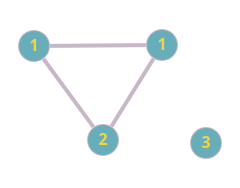
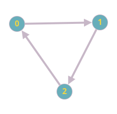
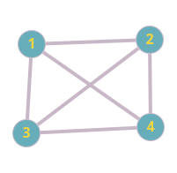
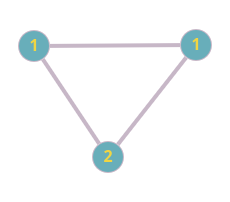

Grafos
Tipo abstratdos de dados: Itens
Para esse primeiro momento dentro do estudo de grafos não nos interessa muito o que tem dentro desses itens e sim como eles se relacionam com outros itens, então por exemplo em uma lista telefônica, temos itens de uma lista telefônica, dentro desses itens temos o nome da pessoa e o número de telefone dessa pessoa, consideramos que o nome da pessoa é a chave que usamos para fazer a busca dentro das relações que estabelecemos, mas esses dados dentro de uma tabela hash não se relacionam diretamente, agora pensando em grafos pensamos realmente nas relações que os itens tem entre eles, mas tudo bem, quais são essas relações?
Podemos pensar primeiramente em um mapa, imagine que traçou uma rota da sua faculdade até sua casa, ele vai te gerar uma rota, podemos imaginar que cada interceção de ruas é um nó do nosso grafo e a própria rua é o caminho entre esses nós, e tem relação com os outros nóes pelas ruas. O maps então relcionando com os grafos, ele calcula os nós e define o melhor caminho até chegar no nó de desejo. Outro conjunto de relações que podemos relacionar com grafos são as páginas webs, pensando em um site, que tem acesso a outro, cada um desses hiperlinks é um nó do grafo que nos leva a outro site. Outro exemplo muito legal são circuitos elétricos, com os pontos de conexão sendo nós do nosso grafo, e os fios os caminhos que nos levam aos outros nós. Outro caso legal seria o exemplo de rede de computadores, por exemplo, na RNP (Rede nacional de pesquisa), toda vez no esquema que vemos a sigla de um estado em um roteador temos um ponto de rede para se comunicar com outra faculdade de outro estado, cada um dessas siglas representa um nó de rede nos estado, e a linha que os liga é o caminho de nó a nó, o interessante desse exemplo é que por exemplo imagine que caia uma rota DF para SP, o grafo busca outro caminho sem ser o direto entre esses dois estados, fazendo assim, não dependente de uma única rota.
O que é um grafo?
Um conjunto de vértices, e um conjunto de arestas (conectam pares distindos de vértices), os vértices são numerados de 0 a v-1, representamso os grafos com bolinhas ligadas por linhas que conectam os mesmos (Como estamos em um teclado de computador, indicaremos sem as bolinhas).
Grafo 1: Exemplo (4 vértices de 0 até 3)
Fonte - Autoral
Algumas regras e conceitos fundamentais:
- Não temos uma aresta que sai dela e vai para ela mesma;
- Dois vértices são adjacentes entre eles, se eles se conectam por meio de uma aresta em comum;
- Se uma aresta sai por exemplo do nó 0 para o nó 2, o caminho é de duas vias, ou seja, do 2 eu consigo ir para o 0;
- Essa "via de mão dupla" pode ser interrompida em grafos que chamamos de grafos dirigidos, com uma seta no final da aresta temos a indicação de um caminho só de ida entre um nó e outro (veja o grafo 2 abaixo);
Grafo 2: Grafo dirigido
Fonte - Autoral
- Um grafo com V vértices tem no máximo [v.(v-1)]/2 arestas
- Grafo completo: Todos os vértices se conectam com todos os vértices:
Grafo 3: Grafo completo
Fonte - Autoral
- Caminho no grafo: É uma sequência de vértices em que cada vértice sucessivo é adjacente ao predecessor do caminho,
- Caminho simples temos vértices e arestas distintas.
- Um ciclo: É um caminho que é simples exceto pelo primeiro e último vértice que são os mesmos, veja a imagem abaixo, mostrando isso.
Grafo 4: Grafo cíclico
Fonte - Autoral
-
Um grafo é conexo se há um caminho de cada vértice para todo outro vértice no próprio grafo.
- Um grafo conexo exige um caminho para todos os outros vértices enquanto um grafo completo tem que ter uma aresta para todos os outros vértices.
- Um grafo que não é conexo consiste em um conjunto de componentes conexas, que são subgrafos conexos máximos.
-
Um grafo conexo acíclico é também chamado de árvore.
- Um conjunto de árvores é chamado de floresta.
-
Como é a nossa ADT dos grafos?
typedef struct {int v; int w;}Edge; // struct responsável por arestas (v e w são os vértices que ela conecta).
Edge EDGE(int, int); // Chamada de inicialização da função EDGE.
typedef struct graph *Graph; // strfuct responsável pelos grafos (ainda não definida).
Graph GRAPHinit(int); // Função de inicialização de um grafo, o int é a quantidade de vértices.
void GRAPHInsertE(Graph, Edge); // Insere as arestas dentro do grafo.
void GRAPHRemoveE(Graph, Edge); // Remove uma aresta dentro do grafo.
int GRAPHEdges(Edge[], Graph G); // Contador de arestas.
Graph GRAPHCopy(Graph); // Me devolve um grafo, duplicando um grafo.
void GRAPHDestroy(Graph); // Dar um free corretamente do grafo livrando espaço.
- Como é a cara da minha struct graph?
- Uma matriz de adjacência.
- Uma matriz onde indicamos quem está conectado com quem.
- Uma matriz de adjacência.
Matriz de adjacência
Struct graph e a função GRAPHInit (inicia o grafo com os vértices)
struct graph{int V, int E; int **adj;} // int V = num_vertices, int E = num_aretas, int **adj = matriz_de_adjagencia inicializada
Graph GRAPHInit(int v){
Graph G = malloc(sizeof(*G));
G->V = v; // Recebe os vértices colocados
G->E = 0; //Ainda sem arestas
G->adj = MATRIZInit(V,V, 0); // Inicializa a matriz de adjacência com 0's
return G;
}
Função MATRIZInit (inicializa a matriz de adjacência)
int** MATRIZInit(int linhas, int colunas, int valorInicial) {
// Aloca memória para a matriz
int** matriz = (int*)malloc(linhas * sizeof(int));
for (int i = 0; i < linhas; i++) {
matriz[i] = (int*)malloc(colunas * sizeof(int));
// Inicializa a linha com o valor inicial especificado
for (int j = 0; j < colunas; j++) {
matriz[i][j] = valorInicial;
}
}
return matriz;
}
Função GRAPHInsertE (Insere uma aresta no grafo)
void GRPAHInsertE(Graph G, Edge e){ // Custo O(1)
int v = e.v, w = e.w; // e = struct e v e w os vértices que ela vai atingir
if(G->adj[v][w] == 0)
G->E++;
G->adj[v][w] = 1;
G->adj[w][v] = 1; // Se não for um grafo dirigido ambas atribuições são verdade
}
Função GRAPHRemoveE (Remove uma aresta no grafo)
void GRAPHRemoveE(Graph G, Edge e){ // Custo O(1)
int v = e.v, w = e.w;
if(G->adj[v][w] == 1)
G->E--;
G->adj[v][w] = 0;
G->adj[w][v] = 0;
}
Função GRAPHEdges (Contador de aresta no grafo)
int GRAPHEdges(Edge a[], Graph G){
int v, w, E = 0;
for(v = 0; v < G->v; v++)
for(w =v+1; w < G->w; w++) // Por não ser um grafo dirigido não precisamos olhar os vértices menores do que estamos analizando
if(G->adj[v][w] = 1)
a[E++] = EDGE(v,w);
return E;
}
- Quando um vértice se liga a outro, colocamos na matriz de adjacência o número 1, caso contrário deixamos com 0.
- Se não for dirigido colocamos de 0 para 5 e de 5 para 0 por exemplo para indicar que podemos fazer o caminho inverso.
Exemplo te matriz adjacente do grafo
| 0 | 1 | 2 | 3 | 4 | 5 | 6 | |
|---|---|---|---|---|---|---|---|
| 0 | 1 | 1 | 1 | ||||
| 1 | 1 | 1 | |||||
| 2 | 1 | ||||||
| 3 | 1 | 1 | 1 | ||||
| 4 | 1 | ||||||
| 5 | 1 | 1 | |||||
| 6 |
- Além das matrizes de adjacências podemos armazenar também nas listas de adjacências